← Back to BIM + Digital
Time-Linked Arena Delivery
Falcon Arena Concept
Build the arena in time before building it on site.
The arena model is connected to phasing, heavy-lift logic, roof erection, crowd and service movement, MEP installation windows, safety zones and commissioning readiness.
The BIM Story
4D is not animation. It is a construction decision language for a project with thousands of moving interfaces.
The portfolio structures the arena into site preparation, foundations, seating bowl, superstructure, roof and envelope, MEP, hospitality fit-out and commissioning — with logistics and risk visible throughout.
Arena FederationCrowd + AccessRoof ErectionHeavy-Lift 4DMEP WindowsCommissioning Readiness
Curated Digital Portfolio
Falcon Arena Concept
A cinematic sequence of coordinated models, digital construction thinking and project-specific BIM intelligence.

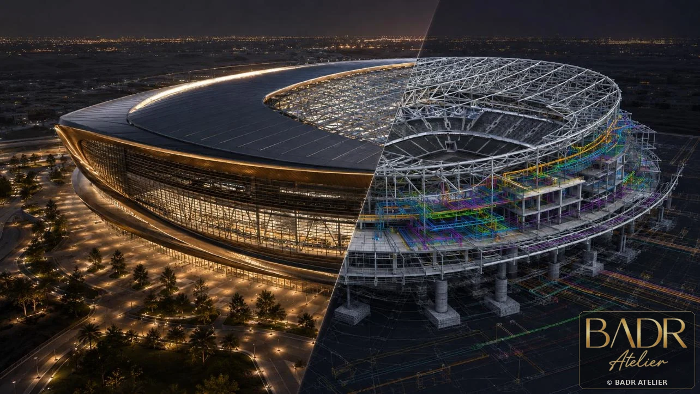
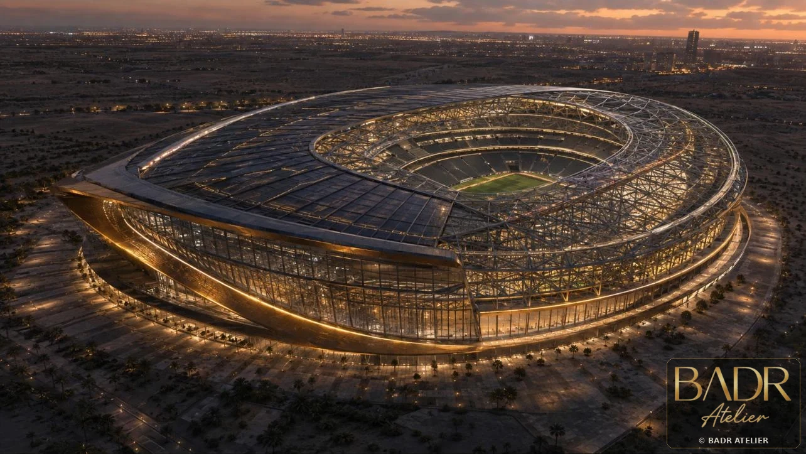
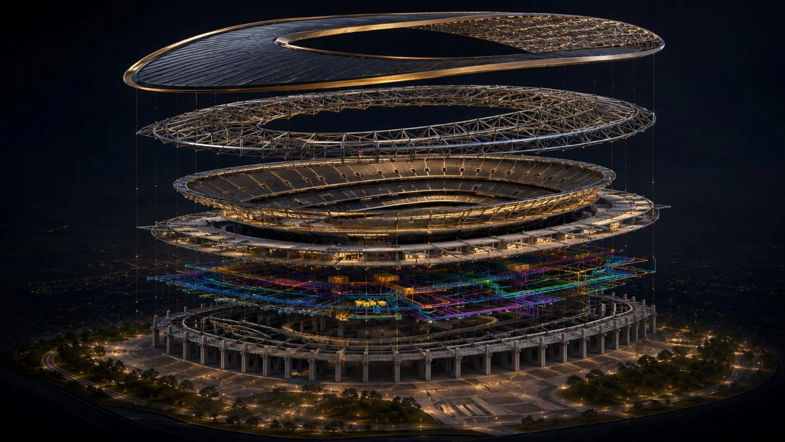
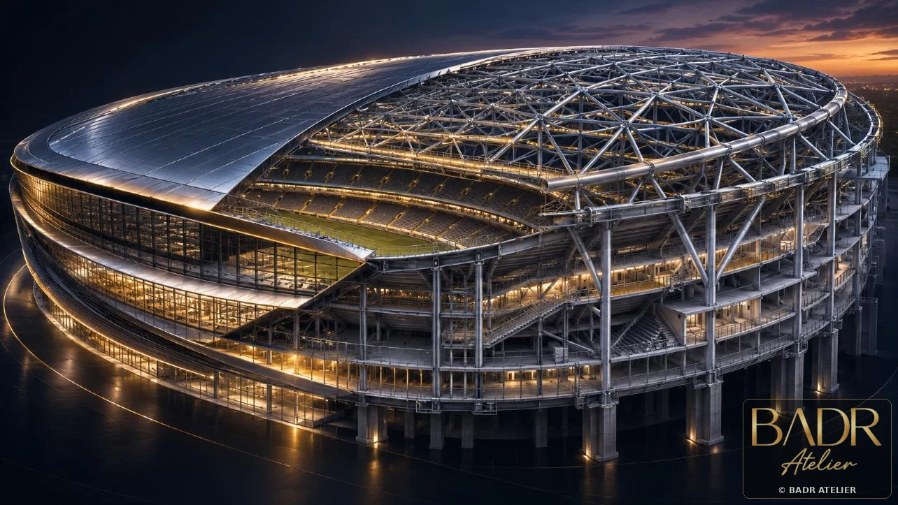
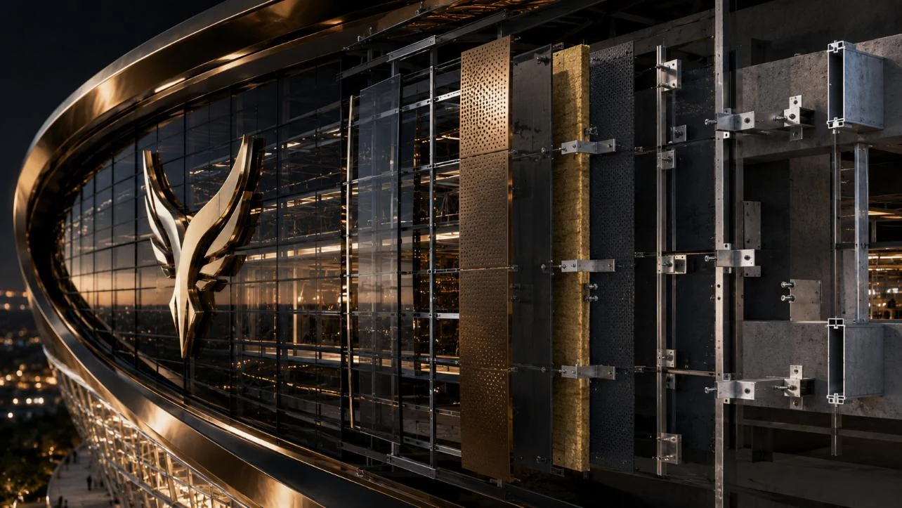
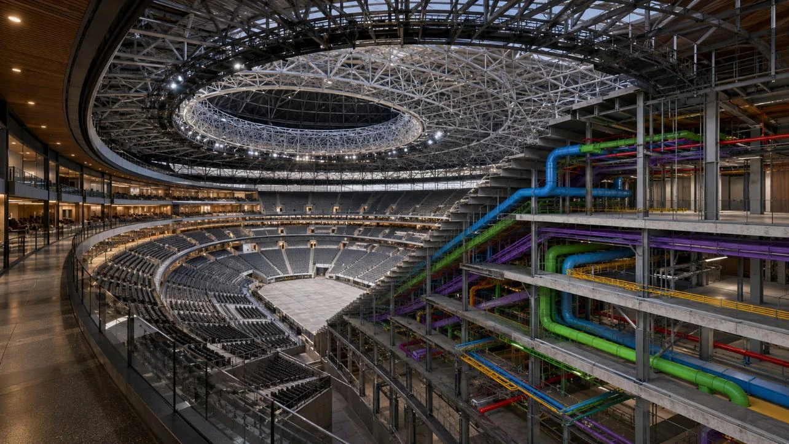
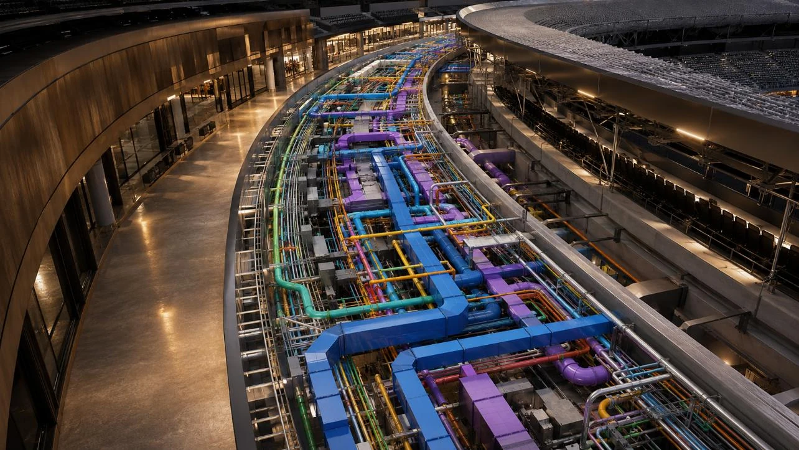
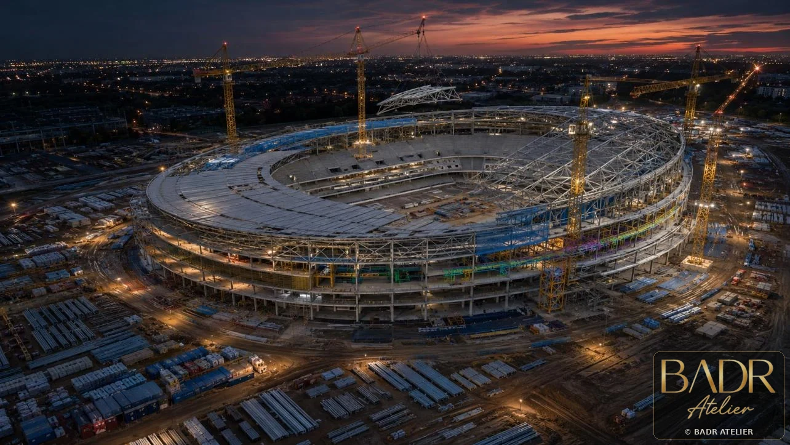

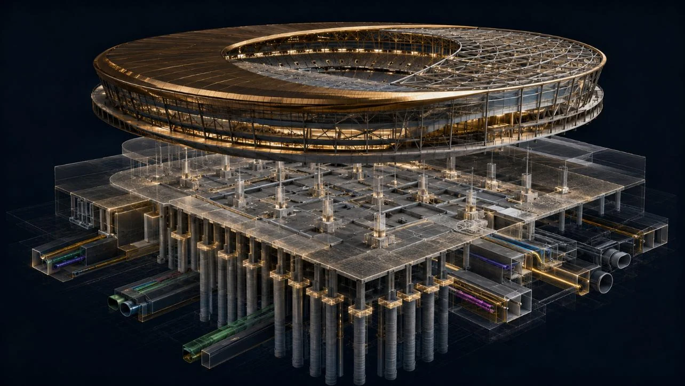


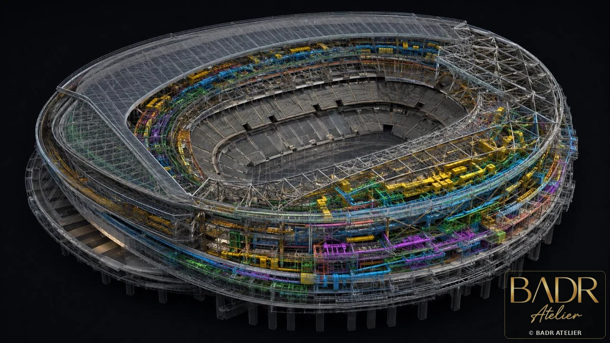
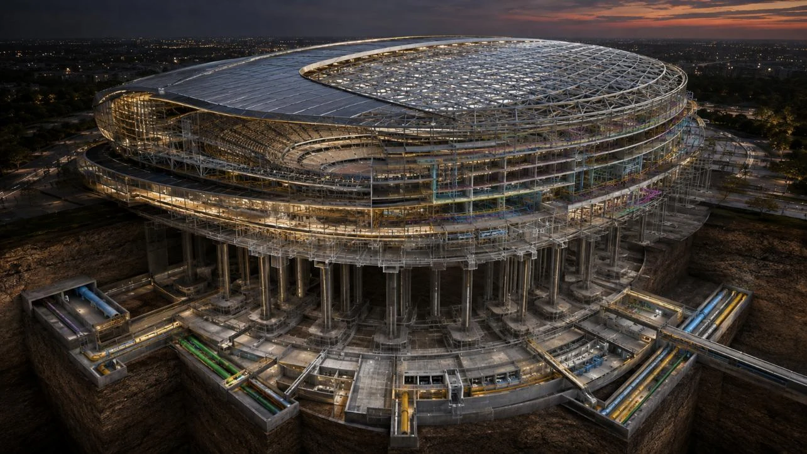
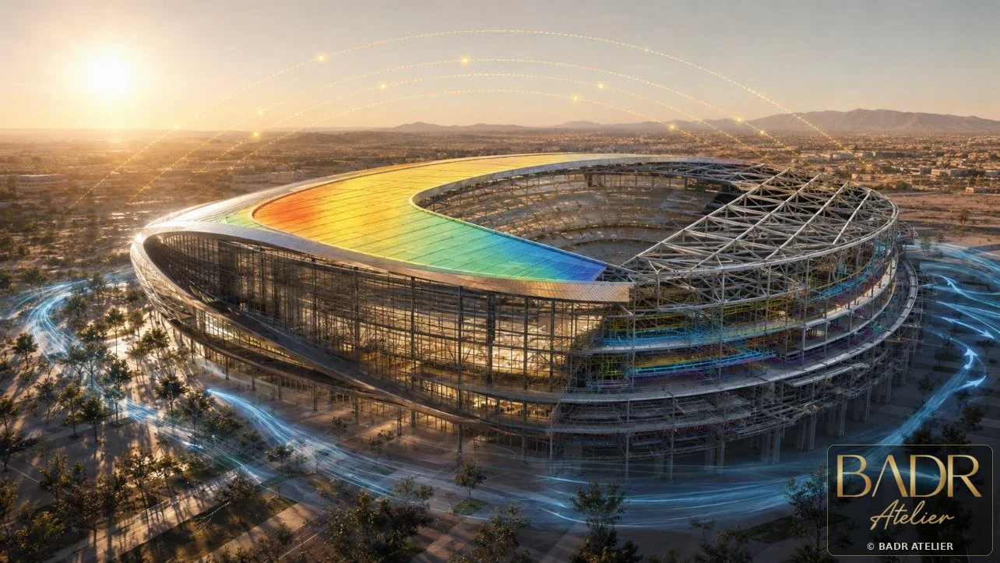